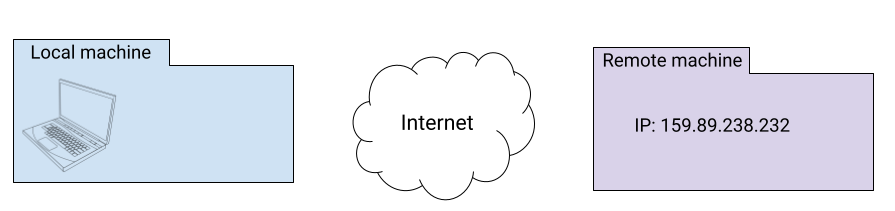
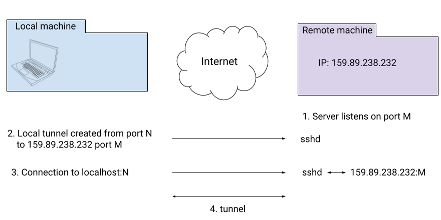
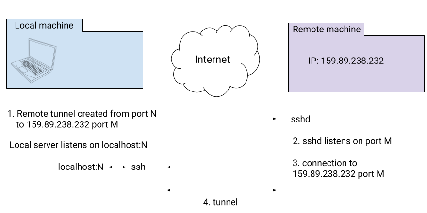

This post shows how to set up SSH port forwarding ("tunnels") - both local and remote - using the extended Go standard library.
Setup
While you could set up localhost forwarding for testing, to discuss a more realistic scenario I would recommend spinning up a basic VPS. For the purpose of writing this post, I run a bare-bones Ubuntu VPS on Digital Ocean with the public IP address 159.89.238.232 (at the time of writing) and a root user. You can easily do the same using any cloud provider (obviously, accessing my VPS won't work for you since it requires SSH authentication with a known set of keys).
Testing the setup - basic remote command execution
Before we start talking about tunnels, let's test our setup by doing something much simpler - basic SSH remote command execution. Here's the equivalent command-line invocation:
$ ssh root@159.89.238.232 'uname -a'
Linux testdrop6 5.19.0-23-generic #24-Ubuntu SMP PREEMPT_DYNAMIC Fri Oct 14 05:39:57 UTC 2022 x86_64 x86_64 x86_64 GNU/Linux
This runs the command uname -a on my VPS. Here are a few things to be aware of:
- The sshd server should be running on the remote server (VPS); run service ssh status to double check. I use OpenSSH's implementations of both the sshd server and ssh client, but presumably other implementations could work as well.
- The default SSH port (22) should be open in whatever firewall the remote server is running. If your VPS runs Ubuntu, check the output of ufw status.
- The first time you connect to the VPS with ssh, it will ask you about checking the server's host key. Either do the due diligence to verify the key or just blindly accept it, but it's important for the VPS to have an entry in your local known_hosts file.
Now let's see how to accomplish the same task in Go; we'll be using "extended stdlib" package https://pkg.go.dev/golang.org/x/crypto/ssh for this purpose. The full code for the samples in this post is available on GitHub.
We'll start with the code that sets up the SSH client configuration for us:
func createSshConfig(username, keyFile string) *ssh.ClientConfig {
knownHostsCallback, err := knownhosts.New(sshConfigPath("known_hosts"))
if err != nil {
log.Fatal(err)
}
key, err := os.ReadFile(keyFile)
if err != nil {
log.Fatalf("unable to read private key: %v", err)
}
// Create the Signer for this private key.
signer, err := ssh.ParsePrivateKey(key)
if err != nil {
log.Fatalf("unable to parse private key: %v", err)
}
// An SSH client is represented with a ClientConn.
//
// To authenticate with the remote server you must pass at least one
// implementation of AuthMethod via the Auth field in ClientConfig,
// and provide a HostKeyCallback.
return &ssh.ClientConfig{
User: username,
Auth: []ssh.AuthMethod{
ssh.PublicKeys(signer),
},
HostKeyCallback: knownHostsCallback,
HostKeyAlgorithms: []string{ssh.KeyAlgoED25519},
}
}
func sshConfigPath(filename string) string {
return filepath.Join(os.Getenv("HOME"), ".ssh", filename)
}
In the interest of brevity, this code is not particularly generic: it's somewhat tuned for my local setup. It takes the VPS username and the path to the local private SSH key as parameters.
First, it configures a "host callback" which is the same host key validation mechanism described earlier in the context of the ssh command-line client. The method I'm using in this sample is reading from the local known_hosts file, where the VPS will already be listed (since we accessed it with ssh earlier). This part of the setup is a bit finicky and if you're running into trouble and just want to make progress, consider using ssh.InsecureIgnoreHostKey instead.
Next, it reads my private key and sets up the ClientConfig. The ED25519 public key algorithm is expected, since this is the one I'm using for my SSH keys.
With a client configuration in hand, the rest of the code is straightforward:
config := createSshConfig(*username, *keyFile)
client, err := ssh.Dial("tcp", *addr, config)
if err != nil {
log.Fatal("Failed to dial: ", err)
}
defer client.Close()
// Each ClientConn can support multiple interactive sessions,
// represented by a Session.
session, err := client.NewSession()
if err != nil {
log.Fatal("Failed to create session: ", err)
}
defer session.Close()
// Once a Session is created, you can a single command on
// the remote side using the Run method.
session.Stdout = os.Stdout
if err := session.Run("uname -a"); err != nil {
log.Fatal("Failed to run: " + err.Error())
}
We create a client and then an interactive session (this is similar to the interactive session we get if we simply ssh into a server). Then the session is used to Run a command. Invoking this Go program we should get the same output as the earlier ssh command-line run:
$ go run ssh-execute-remote-cmd.go \
-addr 159.89.238.232:22 -user root \
-keyfile ~/.ssh/id_ed25519
Linux testdrop6 5.19.0-23-generic #24-Ubuntu SMP PREEMPT_DYNAMIC Fri Oct 14 05:39:57 UTC 2022 x86_64 x86_64 x86_64 GNU/Linux
Local port forwarding
Now that our setup is working, let's see how to implement a local port forwarding server in Go. But first, what does local port forwarding mean? The terminology can be a bit confusing here, so let's use a diagram. We'll start with the components:
The characters in this story are:
- The "local machine" - your laptop, home desktop or whatever you're using to read these posts and run the examples. Your local machine typically doesn't have a public-facing IP address because it's behind layers of NAT, routers and so on.
- The "remote machine" - any cloud server / VPS you control, that has at least a temporary IP address; just like the sample VPS I described earlier in this post.
Local port forwarding means that we use SSH to create a tunnel (a logical bi-directional passthrough connection) between a port on the remote machine and a port on the local machine, and forward connections from local to remote. Here's the flow of events:
It starts by having some server listen on port M on the remote machine. For example, the PostgreSQL server listens on port 5432. This port is most likely not exposed outside the machine for security and other reasons. But suppose we want to talk with our PostgreSQL database on the remote machine using psql from our local machine.
In step 2, the ssh client is used to establish local port forwarding from port N on our local machine to port M on the remote machine. The ssh client contacts the sshd server running on the VPS (typically over the standard SSH port 22, but this can be configured) and they set up this connection.
From this point on, local port N gives us a "tunnel" to remote port M. Connections to localhost:N on the local machine will be automatically connected to port M on the remote machine. To be completely clear: data will flow from the local client using port N to the local ssh client, from there to the remote sshd server which in turn forwards it to the remote port M; see the Appendix for more details.
Let's test this using the ssh client and our VPS setup. I'll use one of my favorite tools - netcat - to demonstrate how this works. First, I run this on my VPS:
remote# nc -lvk 7780
Listening on 0.0.0.0 7780
This creates a TCP server listening on port 7780 and echoing any data it gets to stdout. Port 7780 is not exposed outside the VPS; it's not on the open ports list of ufw. I cannot connect to it directly from my local machine.
Let's set up local port forwarding now. Running this on the local machine:
$ ssh -N -L 7777:localhost:7780 root@159.89.238.232
The syntax here is a bit funky (read man ssh for the gory details), but in a nutshell this means: create a tunnel between localhost port 7777 and port 7780 on the given remote machine. Note that we have to give ssh the username and IP address of the remote machine, just like when we were executing remote commands [1].
Having run the above ssh command, we can treat local port 7777 as if it's a tunnel into the remote port 7780. ssh listens on 7777 and forwards all connections where needed. We can test this by running nc again, this time locally and in client mode:
$ echo "foo bar" | nc -N localhost 7777
Here we instruct nc to open a TCP connection to localhost:7777, send the message "foo bar" and close the connection. Looking at the server logs for our remote machine we'll see:
remote# nc -lvk 7780
Listening on 0.0.0.0 7780
Connection received on localhost 53090
foo bar
Now that we've seen how to set up a tunnel using the standard ssh client, let's turn our attention to Go. Here's a program to establish a local tunnel:
func main() {
addr := flag.String("addr", "", "ssh server address to dial as <hostname>:<port>")
username := flag.String("user", "", "username for ssh")
keyFile := flag.String("keyfile", "", "file with private key for SSH authentication")
remotePort := flag.String("rport", "", "remote port for tunnel")
localPort := flag.String("lport", "", "local port for tunnel")
flag.Parse()
config := createSshConfig(*username, *keyFile)
client, err := ssh.Dial("tcp", *addr, config)
if err != nil {
log.Fatal("Failed to dial: ", err)
}
defer client.Close()
listener, err := net.Listen("tcp", "localhost:"+*localPort)
if err != nil {
log.Fatal(err)
}
defer listener.Close()
for {
// Like ssh -L by default, local connections are handled one at a time.
// While one local connection is active in runTunnel, others will be stuck
// dialing, waiting for this Accept.
local, err := listener.Accept()
if err != nil {
log.Fatal(err)
}
// Issue a dial to the remote server on our SSH client; here "localhost"
// refers to the remote server.
remote, err := client.Dial("tcp", "localhost:"+*remotePort)
if err != nil {
log.Fatal(err)
}
fmt.Println("tunnel established with", local.LocalAddr())
runTunnel(local, remote)
}
}
createSshConfig is the same as before. This program creates an SSH client and then listens on a local socket on the provided port. For each connection, it dials the "remote" port on through the SSH client and establishes a tunnel between the two connections. runTunnel is implemented like this:
// runTunnel runs a tunnel between two connections; as soon as one connection
// reaches EOF or reports an error, both connections are closed and this
// function returns.
func runTunnel(local, remote net.Conn) {
defer local.Close()
defer remote.Close()
done := make(chan struct{}, 2)
go func() {
io.Copy(local, remote)
done <- struct{}{}
}()
go func() {
io.Copy(remote, local)
done <- struct{}{}
}()
<-done
}
It uses goroutines to copy data in both directions between two connections, and closes both connections as soon as one of them reaches EOF or reports an error. Instead of running ssh -N -L to establish the tunnel, we can now run this Go program with the same effect:
$ go run ssh-local-tunnel.go -addr 159.89.238.232:22 -user root \
-keyfile ~/.ssh/id_ed25519 \
-rport 7780 \
-lport 7777
The ssh package is a really nice showcase of the power of Go interfaces; note how natural it appears in user code: just like a regular net.Dial to a TCP address, ssh.Client.Dial returns a value implementing the net.Conn interface. For the user, it's completely seamless - one net.Conn is as good as another, even if they're quite different underneath (one is a direct wrapper around a socket, the other a logical protocol layered on top of SSH).
Remote port forwarding
We've discussed how local port forwarding works, what it can be used for and how to set it up. Now let's talk about its complement - remote port forwarding.
Suppose you have a web application running locally on your machine and you want to test it from the public internet. Sure, you can access it from your browser at localhost - but that's just a simple scenario. Suppose it's a backend for another online service and you really need a public address for it. But your local machine is behind a NAT, so that's pretty hard. At this point you will probably reach for a tool like ngrok that creates a tunnel between your local application and some public-accessible path. Well, it turns out we don't actually need special tools here - ssh can do the job [2].
This is what a "remote tunnel" does - similarly to the local tunnel it creates a connection between a local port and a remote port, but the roles are flipped. sshd will listen to connections on the remote port and route them to the local one. Here's a diagram:
We have a program listening on port N locally, and we create a remote tunnel using the ssh client. From this point on, sshd on the remote machine starts listening to connections on port M.
Whenever a connection to port M on the remote machine is made, sshd forwards it to our local machine across the established tunnel, and our ssh client, in turn, forwards it to the local service on port N.
Let's see how to set it up using standard tools before we jump to the Go implementation. This requires some preparation, because of obvious security reasons. We have to tell our remote machine that it's OK for external clients to access one of its ports, and we have to tell sshd on that machine that it's OK to forward ports.
For demonstration I'll use port 23000 on the remote machine; if you're using ufw, follow these instructions (if you have a different firewall YMMV, or if you don't have a firewall at all feel free to skip):
# ufw allow 23000
Rule added
Rule added (v6)
# ufw status
Status: active
To Action From
-- ------ ----
OpenSSH ALLOW Anywhere
23000 ALLOW Anywhere
OpenSSH (v6) ALLOW Anywhere (v6)
23000 (v6) ALLOW Anywhere (v6)
# ufw enable
Command may disrupt existing ssh connections. Proceed with operation (y|n)? y
Firewall is active and enabled on system startup
At this point it may be worth testing that it actually works by running an nc server listening on port 23000 and accessing it from your local machine.
The second thing we should do is tell sshd it's OK to forward ports. The setting is called GatewayPorts and it should be set to yes in our /etc/ssh/sshd_config file on the remote machine. See man sshd_config for more details.
Assuming this was done, we're now ready to forward ports. Locally, I'll run a simple debugging HTTP server listening on port 8080:
$ go run http-server-debug-request-headers.go
2022/11/16 22:32:54 Starting server on 127.0.0.1:8080
And in a separate terminal the ssh command that sets up remote port forwarding (-R option) from remote port 23000 to local port 8080:
$ ssh -N -R 23000:localhost:8080 root@159.89.238.232
Now we're all set! A curl from the local machine should now hit my debugging server through a public IP address:
$ curl http://159.89.238.232:23000/hi/there
hello /hi/there
And we can easily access it from a browser as well. It's a bit funny that we're running a local client to access a local server through a remote machine! Feel free to prove to yourself that this is "real" by accessing the same address from a different computer (like your phone!).
Now let's turn to the Go implementation. A lot of its code will be shared with the previous samples, so I'll just show what's different - the main function itself:
func main() {
addr := flag.String("addr", "", "ssh server address to dial as <hostname>:<port>")
username := flag.String("user", "", "username for ssh")
keyFile := flag.String("keyfile", "", "file with private key for SSH authentication")
remotePort := flag.String("rport", "", "remote port for tunnel")
localPort := flag.String("lport", "", "local port for tunnel")
flag.Parse()
config := createSshConfig(*username, *keyFile)
client, err := ssh.Dial("tcp", *addr, config)
if err != nil {
log.Fatal("Failed to dial: ", err)
}
defer client.Close()
listener, err := client.Listen("tcp", "localhost:"+*remotePort)
if err != nil {
log.Fatal(err)
}
defer listener.Close()
for {
remote, err := listener.Accept()
if err != nil {
log.Fatal(err)
}
go func() {
local, err := net.Dial("tcp", "localhost:"+*localPort)
if err != nil {
log.Fatal(err)
}
fmt.Println("tunnel established with", local.LocalAddr())
runTunnel(local, remote)
}()
}
}
In spirit, the main server loop is similar to the local tunnel example, but there are a couple of key differences:
- Whereas the local tunnel listens on the local port and creates remote connections in response to local connections, in the remote case these roles are inverted: we listen for remote connections, and spawn local connections in response.
- This tunnel implementation supports more concurrency since we want to be able to handle multiple remote clients connecting to our local server simultaneously. Therefore, a new goroutine is spun up in response to new remote connections.
Appendix: how SSH implements tunnels
The standard networking stack is all about layering and multiplexing. When we create sockets between services it feels very convenient and natural, but lower level protocols (like IP) have no notion of connections or even ports. They just send packets that could get lost, corrupted or arrive out of order. Transport protocols like TCP are layered on top of these packets and provide additional abstractions.
Two computers connected together may have the illusion of communicating over several sockets (and ports) simultaneously, while in reality they're just sending IP packets there and back.
SSH is no different. It's an application layer protocol sitting on top of TCP. Deep down, there's a single TCP socket (usually on port 22) for exchanging information. Once the cryptographic setup is finished and the channel is secure, SSH gives users the illusion of multiple communications happening simultaneously, but it's just packets flowing over the socket. You can have multiple interactive SSH terminals running at the same time, and multiple "channels" - which is SSH's term for data streams that are used for port forwarding.
The SSH protocol itself is described in RFC 4251, and its connection protocol is described in RFC 4254. This is the part of the protocol that takes care of multiplexing multiple communication streams on top of the single encrypted socket SSH establishes. Here's a quote from RFC 4254:
All terminal sessions, forwarded connections, etc., are channels. Either side may open a channel. Multiple channels are multiplexed into a single connection.
Channels are identified by numbers at each end. The number referring to a channel may be different on each side. Requests to open a channel contain the sender's channel number. Any other channel- related messages contain the recipient's channel number for the channel.
Channels are flow-controlled. No data may be sent to a channel until a message is received to indicate that window space is available.
Forwarded ports (tunnels) are mapped directly onto these SSH channels. Each forwarded port gets a channel, and data sent to these ports is encapsulated in SSH connection protocol packets with the appropriate channel number. The SSH client or server on the other end unpacks this packet, looks at the channel number and sends the data down the port corresponding to the channel.
There are many additional sources of information on how SSH channels work. I found these two particularly useful:
- This post discusses more of the philosophy behind how this works and provides interesting context. If you're interested in port forwarding, I strongly recommend reading this one.
- This one dives deep into the code of a specific SSH implementation (DropBear), with C code snippets showing how channels are implemented.
Finally, I want to note that the idea of protocol multiplexing keeps being reused in networking protocols. HTTP/2 uses multiplexing (with similar packet-level encapsulation on top of TLS/TCP) to mix simultaneous multiple connections and features like server push. QUIC (HTTP/3) takes it one step farther and multiplexes everything on top of UDP, doing away with TCP connections altogether.
| [1] | As before, this presupposes that the local machine possesses a private SSH key for the root user on the VPS; the public dual of this key is supposed to be in .ssh/authorized_keys on the remote machine. |
| [2] | Interestingly, the original implementation of ngrok was based upon a tool called localtunnel which itself was just a script wrapping ssh, using an approach that's very similar to the one presented in this post. This is not to say that ngrok isn't useful! It has a large number of very convenient features that go above and beyond the simple tunnels I'm showing here. |